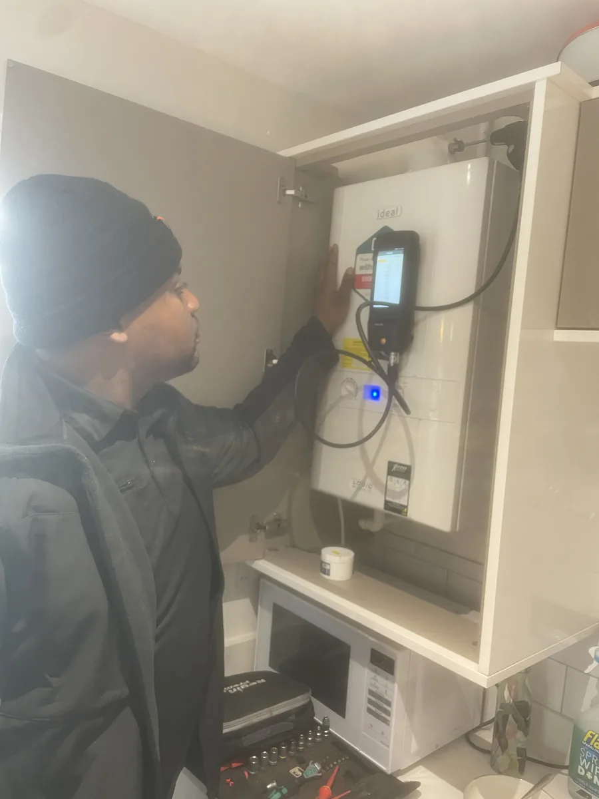
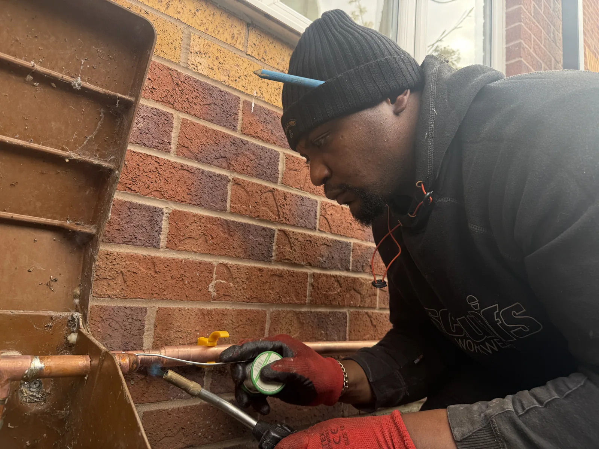

⌁
Repairs & fault finding
Leaks, faulty pipework and water-system problems diagnosed and repaired efficiently.
Reliable plumbing services across Cheadle, Stockport, Wilmslow, Chorlton and South Manchester. Clear communication, tidy workmanship and a professional approach from first call to completion.

From urgent repairs to planned installations, every job is approached methodically and completed with care.
Leaks, faulty pipework and water-system problems diagnosed and repaired efficiently.
Radiator installation, replacement and neat copper or suitable plastic pipework.
Convenient outside taps and professional plumbing connections for domestic appliances.

A confident, adaptable and professional approach, backed by practical training and a strong focus on meeting agreed timescales.
Qualified foundation
Level 2 Plumbing, Green Technologies and Level 1
Electrical Installation.
Safety aware
Health and safety and asbestos awareness.
Customer focused
Friendly communication and respect for your home or
workplace.
Based locally and covering key areas across South Manchester and Cheshire.
Call for 24-hour plumbing support or send the details of your job for a straightforward quote.